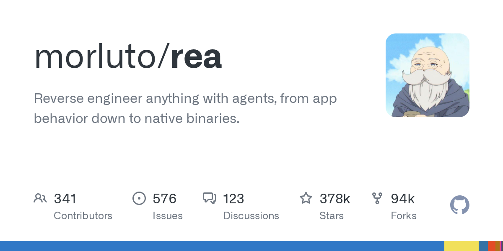

每天八点，比对 GitHub 上 1,500 个 AI 技能仓库的 star 变化。下面这张卡片是昨夜涨得最多的 morluto/rea。

近 12 个月新建仓库 · 按 star 总量
真净增要攒满 31 天快照，现在只有 5 天，这一栏暂时按「30 天内新建仓库的 star 总量」排。
真净增要攒满 8 天快照，现在只有 5 天，这一栏暂时按「7 天内新建仓库的 star 总量」排。
近 1 天的 star 净增，由前后两次快照相减得出。
扫出 1,500 个仓库，40 个上榜。快照只攒了 5 天，月榜和周榜仍是预热口径：按窗口内新建仓库的 star 排，不是净增。
每份榜单最多 10 条，star 不到 10 的仓库不进候选池。每天北京时间 08:07 自动更新。